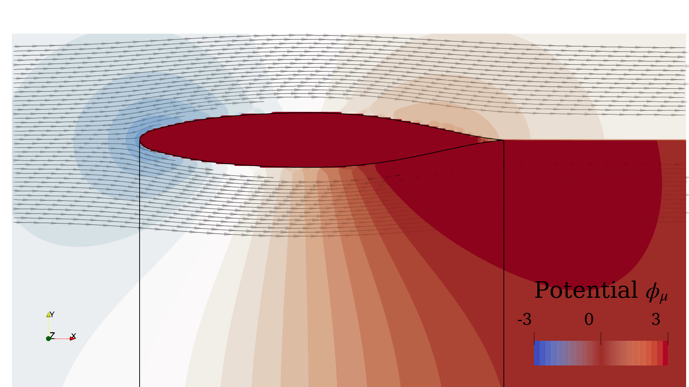

Least-Squares Solver
It is well known that a purely doublet (or vortex ring) solver encounters difficulties when the geometry is closed (i.e., watertight). The flow field around a body is given by the vortex filaments that make the edges of the panel, and the strength of each filament is simply the difference between adjacent panels. Thus, in the absence of an open edge (like in a watertight geometry), the strengths of the vortex-ring elements become irrelevant, and the problem is purely determined by the difference in strength between adjacent panels. This leads to an overdetermined problem where one of the original degrees of freedom (panels strengths) has become redundant.
Let $n$ the number of panels. The problem is well defined for a open geometry formulating the solver as
\[\begin{align*} G \Gamma = -b ,\end{align*}\]
where $b \in \mathbb{R}^{n}$ is the normal of the freestream condition at each panel that needs to be canceled ("no-flow-through" boundary condition), $G \in \mathbb{R}^{n\times n}$ contains the geometric information of the panels and $\Gamma \in \mathbb{R}^{n}$ is the strength of each vortex-ring panel. However, for a watertight geometry, $G$ is no longer full rank and the problem becomes ill-conditioned. Due to numerical roundoff, the system of equations can still be inverted but the numerical solution ends up giving panel strengths (vortex-ring circulations) that are in the order of $10^{16}$ and large numerical noise.
In order to circumvent this issue, we can transform the original problem into a least-squares problem as follows. Since one of the panel strengths is redundant in a watertight geometry, we can simply pick an arbitrary panel and prescribe an arbitrary strength. Then, $G$ has become a $n\times n-1$ matrix, $\Gamma$ is a vector of length $n-1$, while $b$ is still a vector of length $n$. To formulate the least-squares problem, we substract the velocity $b_p$ induced by the "prescribed" panel to the right-hand side,
\[\begin{align*} G \Gamma = -b - b_p ,\end{align*}\]
and we solve the problem as
\[\begin{align*} \Gamma = - \left( G^{t} G \right)^{-1} G^{t} \left( b + b_p \right) ,\end{align*}\]
where the superscript $t$ denotes the transposed matrix.
Either solver (i.e., the original vortex-ring solver or the vortex-ring least-squares one) is automatically called whenever the function FLOWPanel.solve(body, Uinfs, Das, Dbs) is called. The solver to be used is identified based on the body type. A body type bodytype = pnl.RigidWakeBody{pnl.VortexRing} corresponds to the original vortex-ring solver, while the least-squares solver is called by declaring bodytype = pnl.RigidWakeBody{pnl.VortexRing, 2}.
NOTE: The prescribed panel can be manually set by the user through the optional argument
elprescribe = [(index, val), ...]ofFLOWPanel.solve, which is a list of element to prescribe, whereindexis the linear index of the element andvalis the prescribed element strength. If not set, the function defaults toFLOWPanel.solve(body, Uinfs, Das, Dbs; elprescribe=[(1, 0)])
Even though both solvers lead to roughly the same flow field solution, the numerical noise of the ill-condition problem is evident when visualizing the potential field:
Vortex-Ring Solver

Vortex-Ring Least-Squares Solver
